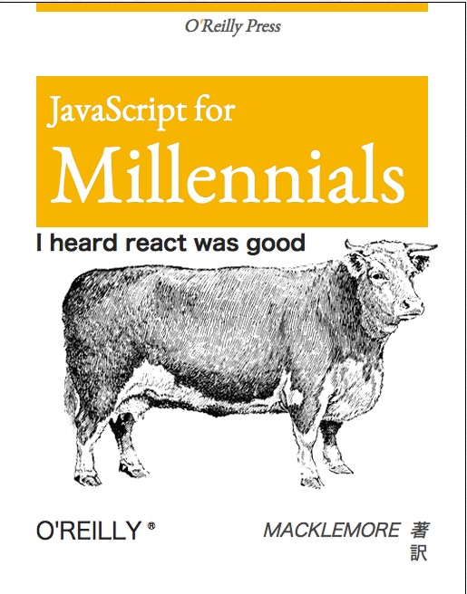

JavaScript
JavaScript Language Basics
What is JavaScript
- Lightwight
- Cross-platform
- Object-oriented
Primitive Data Types
| Type | Values |
| Undefined | undefined |
| Null | null |
| Number | -1, 0, 1.5, 5.7e+308, -Infinity, +Infinity, NaN |
| String | 'Ze', "Manel" |
| Boolean | true, false |
Primitive Data Types